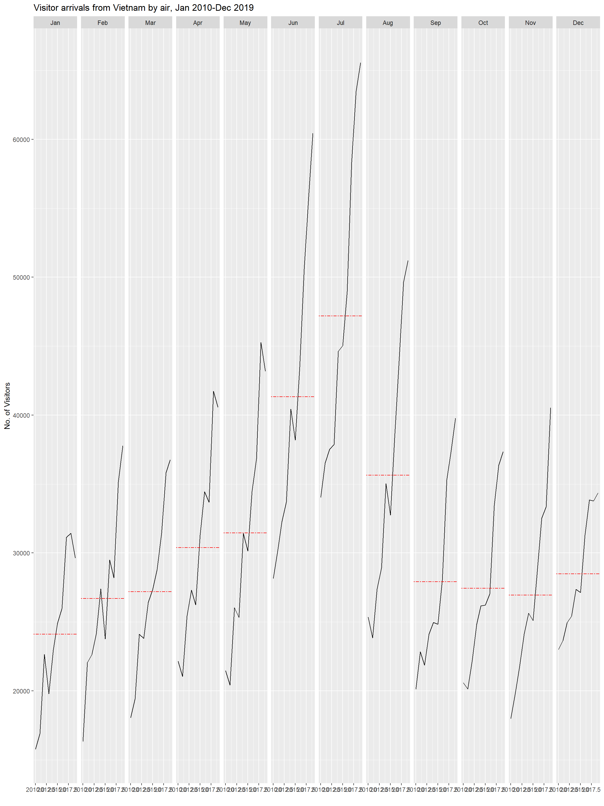

pacman::p_load(lubridate, scales, viridis, ggthemes, gridExtra, tidyverse, readxl, knitr, data.table)Create Cycle Plot
Hands-on Exercise 6.2 - Visual Analysis for Time-Oriented Data
1. OVERVIEW
This study explores steps to create a cycle plot with tidyverse functions.
2. R PACKAGE REQUIRED
2.1 Load R Packages
3. DATA PREPARATION
3.1 Acquire Data Source
This study will be based on arrivals_by_air.xlsx data.
3.2 Import Data
3.2.1 Import Attribute Data
Involved two (2) steps : import and inspect imported data set.
Show the code
air <- read_excel("data/arrivals_by_air.xlsx")
problems(air)3.2.2 Examine data
Show the code
glimpse(air, 70)Rows: 240
Columns: 36
$ `Month-Year` <dttm> 2000-01-01, 2000-02-01, 2000-03-…
$ `Republic of South Africa` <dbl> 3291, 2357, 4036, 4241, 2841, 277…
$ Canada <dbl> 5545, 6120, 6255, 4521, 3914, 348…
$ USA <dbl> 25906, 28262, 30439, 25378, 26163…
$ Bangladesh <dbl> 2883, 2469, 2904, 2843, 2793, 314…
$ Brunei <dbl> 3749, 3236, 3342, 5117, 4152, 501…
$ China <dbl> 33895, 34344, 27053, 30464, 30775…
$ `Hong Kong SAR (China)` <dbl> 13692, 19870, 17086, 22346, 16357…
$ India <dbl> 19235, 18975, 21049, 26160, 35869…
$ Indonesia <dbl> 65151, 37105, 44205, 45480, 38350…
$ Japan <dbl> 59288, 58188, 74426, 49985, 48937…
$ `South Korea` <dbl> 21457, 19634, 20719, 17489, 19398…
$ Kuwait <dbl> 507, 199, 386, 221, 164, 440, 194…
$ Malaysia <dbl> 27472, 29084, 30504, 34478, 34795…
$ Myanmar <dbl> 1177, 1161, 1355, 1593, 1397, 171…
$ Pakistan <dbl> 2150, 2496, 2429, 2711, 2594, 292…
$ Philippines <dbl> 8404, 9128, 11691, 14141, 13305, …
$ `Saudi Arabia` <dbl> 1312, 623, 1578, 705, 679, 2749, …
$ `Sri Lanka` <dbl> 3922, 3988, 4259, 6579, 4625, 474…
$ Taiwan <dbl> 15766, 24861, 18767, 22735, 18399…
$ Thailand <dbl> 12048, 12745, 16971, 20397, 15769…
$ `United Arab Emirates` <dbl> 1318, 899, 1474, 1284, 1042, 1545…
$ Vietnam <dbl> 1527, 2269, 2034, 2420, 1833, 248…
$ `Belgium & Luxembourg` <dbl> 1434, 1596, 1548, 1592, 1167, 117…
$ CIS <dbl> 2703, 1182, 1088, 1012, 660, 712,…
$ Finland <dbl> 1634, 1297, 1220, 1208, 743, 982,…
$ France <dbl> 4752, 6391, 5528, 5544, 4225, 404…
$ Germany <dbl> 12739, 13093, 13645, 13366, 10878…
$ Ireland <dbl> 1292, 1200, 1368, 1345, 1067, 136…
$ Italy <dbl> 3544, 2897, 2717, 2512, 2205, 219…
$ Netherlands <dbl> 4962, 5054, 4950, 4149, 3643, 354…
$ Spain <dbl> 925, 747, 935, 941, 764, 855, 116…
$ Switzerland <dbl> 3731, 3980, 3576, 3850, 3025, 258…
$ `United Kingdom` <dbl> 28986, 35148, 36117, 33792, 23377…
$ Australia <dbl> 34616, 26030, 31119, 34824, 33139…
$ `New Zealand` <dbl> 5034, 3938, 4668, 6890, 7006, 763…3.3. Wrangle data
3.3.1 Derive new fields
Derive “month” and “year” from the “Month-Year” field.
Show the code
air$month <- factor(month
(air$`Month-Year`),
levels = 1:12,
labels = month.abb,
ordered = TRUE)
air$year <- year(ymd(air$`Month-Year`))3.3.1.1 Verify output
Show the code
ls(air) [1] "Australia" "Bangladesh"
[3] "Belgium & Luxembourg" "Brunei"
[5] "Canada" "China"
[7] "CIS" "Finland"
[9] "France" "Germany"
[11] "Hong Kong SAR (China)" "India"
[13] "Indonesia" "Ireland"
[15] "Italy" "Japan"
[17] "Kuwait" "Malaysia"
[19] "month" "Month-Year"
[21] "Myanmar" "Netherlands"
[23] "New Zealand" "Pakistan"
[25] "Philippines" "Republic of South Africa"
[27] "Saudi Arabia" "South Korea"
[29] "Spain" "Sri Lanka"
[31] "Switzerland" "Taiwan"
[33] "Thailand" "United Arab Emirates"
[35] "United Kingdom" "USA"
[37] "Vietnam" "year" 3.3.2 Filter data
Select “Vietnam” data for year 2010 onward.
Vietnam <- air %>%
select(`Vietnam`,
month,
year) %>%
filter(year >= 2010)3.3.3 Compute data for geom_hline
Derive new field name “avgvalue” to reflect the average arrivals for each month.
hline.data <- Vietnam %>%
group_by(month) %>%
summarise(avgvalue = mean(Vietnam))3.3.3.1 Inspect output
Show the code
glimpse(hline.data, 70)Rows: 12
Columns: 2
$ month <ord> Jan, Feb, Mar, Apr, May, Jun, Jul, Aug, Sep, Oct, N…
$ avgvalue <dbl> 24113.4, 26693.4, 27200.1, 30390.8, 31452.9, 41325.…4. CYCLE PLOT
4.1 Plot Cycle Plot
ggplot() +
geom_line(data = Vietnam,
aes(x = year,
y = Vietnam,
group = month),
colour = "black") +
geom_hline(aes
(yintercept = avgvalue),
data = hline.data,
linetype = 6,
colour = "red",
size = 0.5) +
facet_grid(~month) +
labs(axis.text.x = element_blank(),
title = "Visitor arrivals from Vietnam by air, Jan 2010-Dec 2019") +
xlab("") +
ylab("No. of Visitors")